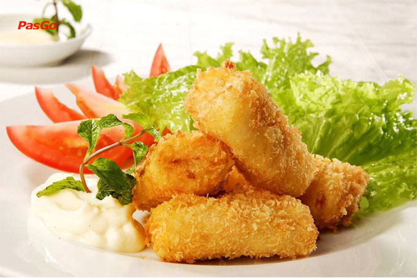

Danh sách và cách làm 7 món ăn ngon với đậu phụ.
1. Đậu phụ chiên xù.
Đậu phụ chiên xù (đậu hũ chiên xù) là món ăn mới chỉ ăn qua một lần sẽ không thể nào quên được vị giòn tan, thơm ngon của lớp vỏ ngoài cùng sự mềm mại bên trong vương vấn mãi nơi đầu lưỡi đâu. Tuy nhiên, cách làm lại khá đơn giản, mà nguyên liệu thì lúc nào cũng sẵn và rẻ nữa đấy. Để món đậu hũ chiên xù đạt được đúng tiêu chuẩn, hãy cùng tham khảo ngay cách làm bạn nhé!
Nguyên liệu:
(cho 4 người ăn)
- Đậu phụ non: 5 bìa nhỏ (nếu bìa đậu to thì 3 bìa thôi nhé)
- Bột chiên giòn: 1 gói
- Bột chiên xù: 1 gói
- Trứng gà ta: 2 quả
- Dầu ăn, muối, hạt tiêu
- Rau xà lách, rau mùi
- Chảo chống dính
Cách làm:
Bước 1: Sơ chế
- Xà lách, rau mùi nhặt sạch, ngâm nước muối 15 phút rồi rửa sạch, để ráo nước
- Cắt đậu phụ thành một khoanh vừa phải (không quá to cũng không quá nhỏ vì đậu phụ non chiên lên sẽ bị hao nhiều, nếu cắt nhỏ, sau khi chiên miếng đậu sẽ quắt lại, không được đẹp, và cũng kém ngon), sau đó rắc một chút muối lên để đậu có vị đậm đà hơn.
Mách nhỏ: Bạn hãy cho đậu phụ vào ngăn đá của tủ lạnh khoảng 30 phút trước khi chiên, để miếng đậu không bị nát, vỡ khi chiên.
Bước 2: Thực hiện
- Đánh trứng gà tan đều cùng chút hạt tiêu.
- Bột chiên xù bạn đổ vào âu lớn còn bột chiên giòn thì trộn với chút hạt tiêu. Lăn đậu qua bột chiên giòn rồi nhúng vào bát trứng, cuối cùng là nhúng vào bột chiên xù. Lăn đều cho đến khi bột chiên xù bám đều lên đậu phụ, cứ lần lượt làm như vậy cho hết số đậu non.
Lưu ý:
- Đậu hũ chiên giòn muốn giòn và ngậy lại thêm màu sắc bắt mắt quan trọng chính là bước nhúng miếng đậu vào trong trứng, nhưng nếu không thích bạn cũng có thể bỏ qua bước này.
- Khi lăn đậu qua bột, nên dùng tay chứ không nên dùng đũa gắp miếng đậu, vì đậu phụ non rất mềm nên dễ bị nát. Chỉ cần lăn nhẹ đậu lên bột để bột bám đều quanh miếng đậu là được.
- Đun sôi chảo dầu (không nhất thiết phải cho ngập dầu) rồi thả đậu đã tẩm trứng và bột vào rán, khi rán nên chý ý lật đều 2 mặt để miếng đậu vàng đều; không được để đậu cháy quá sẽ mất đi vị ngon và hương thơm nhé.
- Đến khi đậu phụ có màu vàng đều thì vớt ra, để ráo dầu và thưởng thức.
Yêu cầu thành phẩm: Đậu phụ chiên xù phải giòn bên ngoài và nóng bên trong, khi cắn miếng đậu sẽ cảm nhận được vị béo ngậy, giòn tan của vỏ bột bên ngoài, sau đó đến vị mềm mại tan nhanh trong miệng của lớp đậu phụ bên trong đó. Lúc này, bạn có thể chấm với tương ớt hoặc sốt mayonnaise, ăn kèm với xà lách và các loại rau mùi, đảm bảo rằng sẽ ngon hơn bất kỳ món “sơn hào hải vị” nào đấy.
2. Đậu phụ chiên trứng.
Đậu hũ được chế biến từ đậu nành. Sau khi đậu nành tươi được ép lấy nước, phần sữa đậu nành này được làm cho đông tụ, rồi ép vào khuôn thành đậu hũ. Và từ những miệng đậu hũ đơn giản, thân quen trong những bữa cơm hằng ngày chúng ta có thể chế biến được rất nhiều món ăn ngon. Món đậu hũ trứng chiên có lớp đậu hũ bên trong béo ngậy, mềm và tan ngay trong miệng, lớp vỏ ngoài được bao bởi vị bột chiên ăn giòn rụm, thơm phức. Đậu hũ trứng chiên vừa thơm ngon lại nóng hổi, giòn giòn, rất thích hợp để thưởng thức trong ngày mát trời. Làm sao để chiên đậu hũ giòn mà không hề bị nát thì hãy xem bí kíp dưới đây nhé.